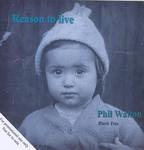

| Artist: | Phil Walton |
| Title: | Reason To Live |
| Label: | Blaris Trax |
| Length(s): | 50 minutes |
| Year(s) of release: | 2006 |
| Month of review: | [07/2008] |
| 1) | Passed Me By | 4.25 |
| 2) | What Are You Waiting For? | 5.25 |
| 3) | All Of Me | 3.45 |
| 4) | Do You Love Me? | 4.54 |
| 5) | Don't Be Coming Back! | 3.10 |
| 6) | She Walked | 3.28 |
| 7) | Just Another Day | 4.37 |
| 8) | Sail Away | 4.33 |
| 9) | What Becomes Of You? | 3.10 |
| 10) | Go To Sleep | 2.37 |
| 11) | Will You Dance? | 4.39 |
| 12) | Reason To Live | 5.25 |
Walton's vocals are somewhere in between Andy Latimer and Richard Sinclair. In timbre, that is. Furthermore there's a sort of total semblance to some of Peter Blegvad's solo work: singer songwriter with a bit of an experimental twist. Unfortunately Walton's voice is on the shaky side and somewhat off key at moments, too, to the point of "Oh, come on!" in tracks like Just Another Day and Sail Away, where the wheels appear to be coming off completely. It takes several tracks to recuperate from this ordeal and long after giving up completely about the album, the closer and title track turns out the first with a real melody and a rather good sound, albeit a tad on the sweet side.
Interestingly, according to the promo sheet Phil's initial intention was to use the disc as a showcase to attract singers. This approach was later dropped. Not a good decision, since I feel the compositions have more to offer than these renditions display. But then again: would this attract singers?
Anyway, enough about the vocals and on to some variant of my one-man-album-rant. Phil takes care of the keys, guitar and drums as well (or so I should assume). This is done in such a way that all of the tracks suggest that there is something interesting there, without quite displaying it. I find it hard to explain exactly which effect this is, but the music is played in such a laidback, to the point of sedate, manner, that the attention is directed towards the vocals.